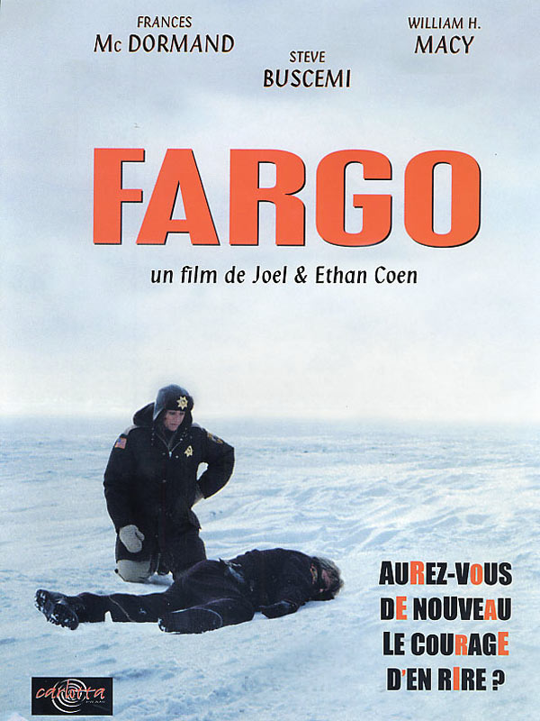
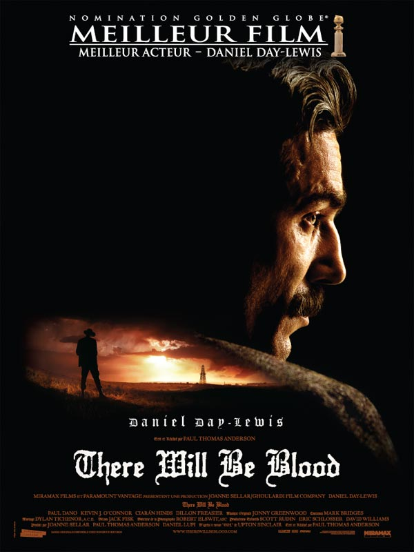
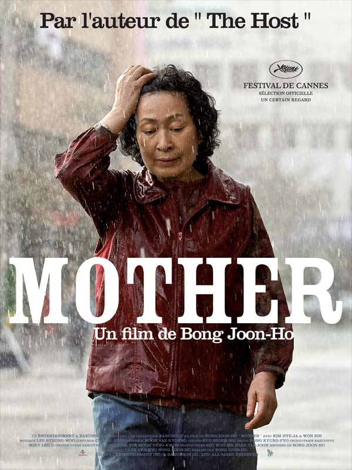

Student in the Entrepreneurs master at HEC Paris, I decided to take the Wagon course in order to get technical hard skills.
I'm also a DJ!|  |
FargoDirected by Joel & Ethan Coen. Jerry Lundegaard's inept crime falls apart due to his and his henchmen's bungling and the persistent police work of the quite pregnant Marge Gunderson. |
|  |
There Will Be BloodDirected by Paul Thomas Anderson. A story of family, religion, hatred, oil and madness, focusing on a turn-of-the-century prospector in the early days of the business. |
|  |
MotherDirected by Joon-ho Bong. A mother desperately searches for the killer who framed her son for a girl's horrific murder. |